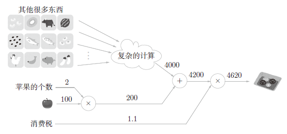
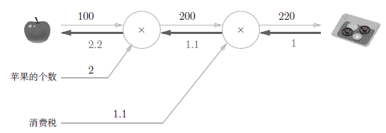
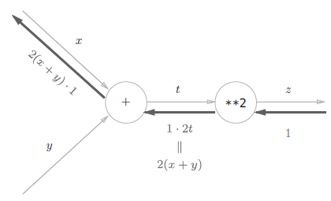
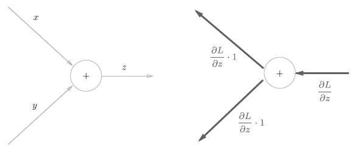
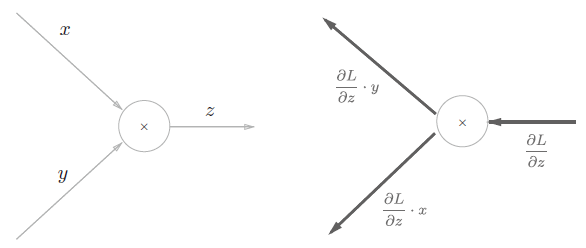
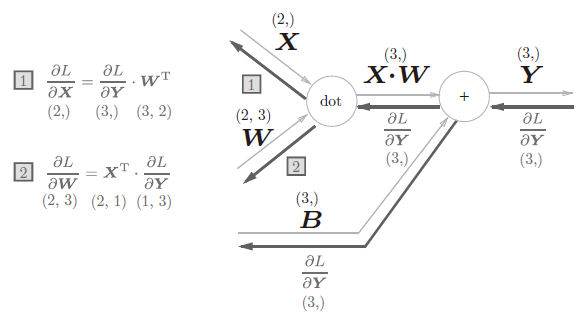

正文
理解误差反向传播法：
-
基于数学式
-
基于计算图
5.1 计算图
5.1.1 用计算图求解
“从左向右进行计算”是一种正方向上的传播，简称为正向传播（forward propagation）。正向传播是从计算图出发点到结束点的传播。
既然有正向传播这个名称，当然也可以考虑反向（从图上看的话，就是从右向左）的传播。实际上，这种传播称为反向传播（backward propagation）。反向传播将在接下来的导数计算中发挥重要作用。
5.1.2 局部计算
{kind=link}

例如苹果和其他很多东西的求和运算（4000 + 200 → 4200）并不关心 4000 这个数字是如何计算而来的，只要把两个数字相加就可以了。换言之，各个节点处只需进行与自己有关的计算（在这个例子中是对输入的两个数字进行加法运算），不用考虑全局。
5.1.3 为何用计算图解题
{kind=link}

这里，假设我们想知道苹果价格的上涨会在多大程度上影响最终的支付金额，即求“支付金额关于苹果的价格的导数”。设苹果的价格为 ，支付金额为 ，则相当于求
这个导数的值表示当苹果的价格稍微上涨时，支付金额会增加多少。
反向传播从右向左传递导数的值（1→1.1→2.2）。从这个结果中可知，“支付金额关于苹果的价格的导数”的值是 2.2。这意味着，如果苹果的价格上涨 1 日元，最终的支付金额会增加 2.2 日元（严格地讲，如果苹果的价格增加某个微小值，则最终的支付金额将增加那个微小值的 2.2 倍）。
5.2 链式法则
计算图的正向传播将计算结果正向（从左到右）传递，其计算过程是我们日常接触的计算过程，所以感觉上可能比较自然。
反向传播将局部导数向正方向的反方向（从右到左）传递，一开始可能会让人感到困惑。传递这个局部导数的原理，是基于**链式法则（chain rule）**的。
5.2.2 什么是链式法则
先从复合函数说起。复合函数是由多个函数构成的函数。比如， 是由下式所示的两个式子构成的。
链式法则是关于复合函数的导数的性质，定义如下：
如果某个函数由复合函数表示，则该复合函数的导数可以用构成复合函数的各个函数的导数的乘积表示。
5.2.3 链式法则和计算图
{kind=link}

根据计算图的反向传播的结果，，计算图的反向传播是基于链式法则成立的。
5.3 反向传播
5.3.1 加法节点的反向传播
{kind=link}

考虑 ，
的计算位于这个大型计算图的某个地方，从上游会传来 的值，并向下游传递 和 。
5.3.2 乘法节点的反向传播
考虑 ，则
{kind=link}

加法的反向传播只是将上游的值传给下游，并不需要正向传播的输入信号。但是，乘法的反向传播需要正向传播时的输入信号值。因此，实现乘法节点的反向传播时，要保存正向传播的输入信号。
5.3.3 苹果的例子
这里要解的问题是苹果的价格、苹果的个数、消费税这 3 个变量各自如何影响最终支付的金额。这个问题相当于求“支付金额关于苹果的价格的导数”“支付金额关于苹果的个数的导数”“支付金额关于消费税的导数”。
5.4 简单层的实现
把要实现的计算图的乘法节点称为“乘法层”（MulLayer），加法节点称为“加法层”（AddLayer）。
5.4.1 乘法层的实现
层的实现中有两个共通的方法（接口）forward()和backward()。forward()对应正向传播，backward()对应反向传播。
考虑 ，则
class MulLayer:
def __init__(self):
"""
定义 x 和 y（保存正向传播的输入信号）
"""
self.x = None
self.y = None
def forward(self, x, y):
self.x = x
self.y = y
out = x * y
return out
def backward(self, dout):
dx = dout * self.y # 翻转 x 和 y
dy = dout * self.x
return dx, dyapple = 100
apple_num = 2
tax = 1.1
# layer
mul_apple_layer = MulLayer()
mul_tax_layer = MulLayer()
# forward
apple_price = mul_apple_layer.forward(apple, apple_num) # 苹果总价
price = mul_tax_layer.forward(apple_price, tax) # 加上税收总价
print(price) # 220220.00000000000003
此外，关于各个变量的导数可由backward()求出。
# backward
dprice = 1
dapple_price, dtax = mul_tax_layer.backward(dprice)
dapple, dapple_num = mul_apple_layer.backward(dapple_price)
print(dapple, dapple_num, dtax) # 2.2 110 2002.2 110.00000000000001 200
5.4.2 加法层的实现
class AddLayer:
def __init__(self):
"""
加法层不需要特意进行初始化，所以__init__()中什么也不运行
"""
pass
def forward(self, x, y):
out = x + y
return out
def backward(self, dout):
dx = dout * 1
dy = dout * 1
return dx, dy使用加法层和乘法层，实现上图所示的购买 2 个苹果和 3 个橘子。
apple = 100
apple_num = 2
orange = 150
orange_num = 3
tax = 1.1
# layer 生成必要的层
mul_apple_layer = MulLayer()
mul_orange_layer = MulLayer()
add_apple_orange_layer = AddLayer()
mul_tax_layer = MulLayer()
# forward 合适的顺序调用正向传播的 forward() 方法
apple_price = mul_apple_layer.forward(apple, apple_num) #(1)
orange_price = mul_orange_layer.forward(orange, orange_num) #(2)
all_price = add_apple_orange_layer.forward(apple_price, orange_price) #(3)
price = mul_tax_layer.forward(all_price, tax) #(4)
# backward 与正向传播相反的顺序调用反向传播的 backward() 方法
dprice = 1
dall_price, dtax = mul_tax_layer.backward(dprice) #(4)
dapple_price, dorange_price = add_apple_orange_layer.backward(dall_price) #(3)
dorange, dorange_num = mul_orange_layer.backward(dorange_price) #(2)
dapple, dapple_num = mul_apple_layer.backward(dapple_price) #(1)
print(price) # 715
print(dapple_num, dapple, dorange, dorange_num, dtax) # 110 2.2 3.3 165 650715.0000000000001
110.00000000000001 2.2 3.3000000000000003 165.0 650
5.5 激活函数层的实现
5.5.1 ReLU 层
ReLU 由下式表示：
则
class Relu:
def __init__(self):
self.mask = None
def forward(self, x):
"""
mask 是由 True/False 构成的 NumPy 数组，
它会把正向传播时的输入 x 的元素中小于等于 0 的地方保存为 True，
其他地方（大于 0 的元素）保存为 False
"""
self.mask = (x <= 0)
out = x.copy()
out[self.mask] = 0
return out
def backward(self, dout):
"""
如果正向传播时的输入值小于等于 0，则反向传播的值为 0
反向传播中会使用正向传播时保存的 mask，
将从上游传来的 dout 的 mask 中的元素为 True 的地方设为 0
"""
dout[self.mask] = 0
dx = dout
return dx5.5.2 Sigmoid 层
\begin{eqnarray} y &= \frac{1}{1+\exp(-x)} \\ y' &= \left(\frac{1}{1+\exp(-x)}\right)'\\ &= -y^2\left[-\left(\exp(-x)\right)\right]\\ &= y^2\exp(-x)\\ &= y(1-y) \end{eqnarray}class Sigmoid:
def __init__(self):
self.out = None
def forward(self, x):
"""
正向传播时将输出保存在了实例变量 out 中
"""
out = 1 / (1 + np.exp(-x))
self.out = out
return out
def backward(self, dout):
"""
反向传播时，使用该变量 out 进行计算
"""
dx = dout * (1.0 - self.out) * self.out
return dx5.6 Affine/Softmax 层的实现
5.6.1 Affine 层
神经网络的正向传播中进行的矩阵的乘积运算在几何学领域被称为“仿射变换”A。因此，这里将进行仿射变换的处理实现为“Affine 层”。
仿射层（Affine Layer） 神经网络中的一个全连接层。仿射（Affine）的意思是前面一层中的每一个神经元都连接到当前层中的每一个神经元。在许多方面，这是神经网络的「标准」层。仿射层通常被加在卷积神经网络或循环神经网络做出最终预测前的输出的顶层。仿射层的一般形式为 ，其中 是层输入， 是参数， 是一个偏差矢量， 是一个非线性激活函数。
5.6.2 批版本的 Affine 层
{kind=link}

-
-
-
的第一个轴（第 0 轴）方向上的和
class Affine:
def __init__(self, W, b):
self.W = W
self.b = b
self.x = None
self.dW = None
self.db = None
def forward(self, x):
self.x = x
out = np.dot(x, self.W) + self.b
return out
def backward(self, dout):
dx = np.dot(dout, self.W.T) # (1)
self.dW = np.dot(self.x.T, dout) # (2)
self.db = np.sum(dout, axis=0) # (3)
return dx5.6.3 Softmax-with-Loss 层
class SoftmaxWithLoss:
def __init__(self):
self.loss = None # 损失
self.y = None # softmax 的输出
self.t = None # 监督数据（one-hot vector）
def forward(self, x, t):
self.t = t
self.y = softmax(x)
self.loss = cross_entropy_error(self.y, self.t)
return self.loss
def backward(self, dout=1):
batch_size = self.t.shape[0]
dx = (self.y - self.t) / batch_size
return dx5.7 误差反向传播法的实现
5.7.1 神经网络学习的全貌图
前提
神经网络中有合适的权重和偏置，调整权重和偏置以便拟合训练数据的过程称为学习。神经网络的学习分为下面 4 个步骤。
步骤 1（mini-batch）
从训练数据中随机选择一部分数据。
步骤 2（计算梯度）
计算损失函数关于各个权重参数的梯度。（误差反向传播法会在此步出现）
步骤 3（更新参数）
将权重参数沿梯度方向进行微小的更新。
步骤 4（重复）
重复步骤 1、步骤 2、步骤 3。
5.7.2 对应误差反向传播法的神经网络的实现
import sys, os
sys.path.append(os.pardir)
import numpy as np
from common.layers import *
from common.gradient import numerical_gradient
from collections import OrderedDict
class TwoLayerNet:
def __init__(self, input_size, hidden_size, output_size, weight_init_std=0.01):
"""
进行初始化：
input_size: 输入层的神经元数
hidden_size: 隐藏层的神经元数
output_size: 输出层的神经元数
weight_init_std: 初始化权重时的高斯分布的规模
"""
# 初始化权重
self.params = {}
self.params['W1'] = weight_init_std * np.random.randn(input_size, hidden_size)
self.params['b1'] = np.zeros(hidden_size)
self.params['W2'] = weight_init_std * np.random.randn(hidden_size, output_size)
self.params['b2'] = np.zeros(output_size)
# 生成层
self.layers = OrderedDict()
self.layers['Affine1'] = Affine(self.params['W1'], self.params['b1'])
self.layers['Relu1'] = Relu()
self.layers['Affine2'] = Affine(self.params['W2'], self.params['b2'])
self.lastLayer = SoftmaxWithLoss()
def predict(self, x):
"""
进行识别（推理）
x: 是图像数据
"""
for layer in self.layers.values():
x = layer.forward(x)
return x
def loss(self, x, t):
"""
计算损失函数的值
x: 输入数据
t: 监督数据
"""
y = self.predict(x)
return self.lastLayer.forward(y, t)
def accuracy(self, x, t):
"""
计算识别精度
"""
y = self.predict(x)
y = np.argmax(y, axis=1)
if t.ndim != 1:
t = np.argmax(t, axis=1)
accuracy = np.sum(y == t) / float(x.shape[0])
return accuracy
def numerical_gradient(self, x, t):
"""
通过数值微分计算关于权重参数的梯度
"""
loss_W = lambda W: self.loss(x, t)
grads = {}
grads['W1'] = numerical_gradient(loss_W, self.params['W1'])
grads['b1'] = numerical_gradient(loss_W, self.params['b1'])
grads['W2'] = numerical_gradient(loss_W, self.params['W2'])
grads['b2'] = numerical_gradient(loss_W, self.params['b2'])
return grads
def gradient(self, x, t):
"""
通过误差反向传播法计算关于权重参数的梯度
"""
# forward
self.loss(x, t)
# backward
dout = 1
dout = self.lastLayer.backward(dout)
layers = list(self.layers.values())
layers.reverse()
for layer in layers:
dout = layer.backward(dout)
# 设定
grads = {}
grads['W1'] = self.layers['Affine1'].dW
grads['b1'] = self.layers['Affine1'].db
grads['W2'] = self.layers['Affine2'].dW
grads['b2'] = self.layers['Affine2'].db
return grads5.7.3 误差反向传播法的梯度确认
两种求梯度的方法：
-
基于数值微分的方法，实现简单，因此，一般情况下不太容易出错
-
解析性地求解数学式的方法，使用误差反向传播法，即使存在大量的参数，也可以高效地计算梯度。实现很复杂，容易出错。
确认数值微分求出的梯度结果和误差反向传播法求出的结果是否一致（严格地讲，是非常相近）的操作称为梯度确认（gradient check）。
import sys, os
sys.path.append(os.pardir)
import numpy as np
from dataset.mnist import load_mnist
# 读入数据
(x_train, t_train), (x_test, t_test) = load_mnist(normalize=True, one_hot_label = True)
network = TwoLayerNet(input_size=784, hidden_size=50, output_size=10)
x_batch = x_train[:3]
t_batch = t_train[:3]
grad_numerical = network.numerical_gradient(x_batch, t_batch)
grad_backprop = network.gradient(x_batch, t_batch)
# 求各个权重的绝对误差的平均值
for key in grad_numerical.keys():
diff = np.average( np.abs(grad_backprop[key] - grad_numerical[key]) )
print(key + ":" + str(diff))W1:5.098230563374566e-10
b1:3.2030157216551143e-09
W2:5.229628806065797e-09
b2:1.399595522047492e-07
误差的计算方法是求各个权重参数中对应元素的差的绝对值，并计算其平均值。
5.7.4 使用误差反向传播法的学习
import sys, os
sys.path.append(os.pardir)
import numpy as np
from dataset.mnist import load_mnist
# 读入数据
(x_train, t_train), (x_test, t_test) = load_mnist(normalize=True, one_hot_label=True)
network = TwoLayerNet(input_size=784, hidden_size=50, output_size=10)
iters_num = 10000
train_size = x_train.shape[0]
batch_size = 100
learning_rate = 0.1
train_loss_list = []
train_acc_list = []
test_acc_list = []
iter_per_epoch = max(train_size / batch_size, 1)
for i in range(iters_num):
batch_mask = np.random.choice(train_size, batch_size)
x_batch = x_train[batch_mask]
t_batch = t_train[batch_mask]
# 通过误差反向传播法求梯度
grad = network.gradient(x_batch, t_batch)
# 更新
for key in ('W1', 'b1', 'W2', 'b2'):
network.params[key] -= learning_rate * grad[key]
loss = network.loss(x_batch, t_batch)
train_loss_list.append(loss)
if i % iter_per_epoch == 0:
train_acc = network.accuracy(x_train, t_train)
test_acc = network.accuracy(x_test, t_test)
train_acc_list.append(train_acc)
test_acc_list.append(test_acc)
print(train_acc, test_acc)0.1278 0.1323
0.9025833333333333 0.9064
0.9237166666666666 0.925
0.93455 0.933
0.9447833333333333 0.9427
0.95155 0.9485
0.95825 0.9552
0.96255 0.9593
0.96375 0.9599
0.9665333333333334 0.9619
0.9697166666666667 0.9655
0.9716666666666667 0.9673
0.9735666666666667 0.9672
0.9745 0.9678
0.9774 0.9698
0.9761166666666666 0.9692
0.9789833333333333 0.9722
5.8 小结
-
通过使用计算图，可以直观地把握计算过程。
-
计算图的节点是由局部计算构成的。局部计算构成全局计算。
-
计算图的正向传播进行一般的计算。通过计算图的反向传播，可以计算各个节点的导数。
-
通过将神经网络的组成元素实现为层，可以高效地计算梯度（反向传播法）。
-
通过比较数值微分和误差反向传播法的结果，可以确认误差反向传播法的实现是否正确（梯度确认）。